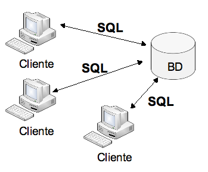
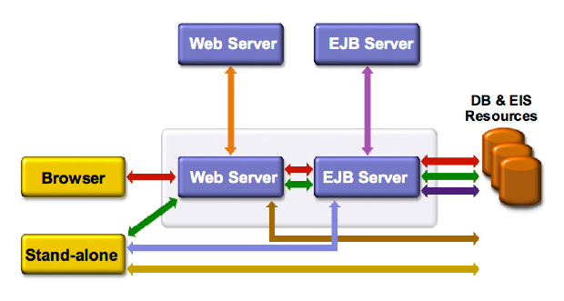

Introducción a Java EE
Introducción
El lenguaje de programación Java fue desarrollado en 1991 por James Gosling y Sun Microsystems y lanzado al mercado en 1995 con la idea principal de construir pequeñas aplicaciones (applets) que se ejecutaban dentro de los navegadores (browsers) de páginas Web.
En aquella época los visionarios de Sun se imaginaban un mundo en el que todos los computadores estaban conectados a Internet y los navegadores eran más importantes que los propios sistemas operativos en los que se ejecutaban. De esta forma, los applets (y Java) se convertirían de facto en la nueva forma de programar aplicaciones.
La primera parte de la predicción se ha cumplido. Pero no la segunda. La mayoría de los ordenadores están continuamente conectados a Internet. Pero los sistemas operativos siguen siendo más importantes que los navegadores. Microsoft ha cedido algo de poder a Linux y Apple, pero todas estas empresas siguen luchando para proporcionar la mejor experiencia a usuarios. Unos usuarios que quieren que sus computadores hagan algo más que ejecutar unas pequeñas aplicaciones dentro de un navegador Web.
Los navegadores Web de hoy en día proporcionan bastante más interactividad que en 1995, pero las aplicaciones que ejecutan tienen otros lenguajes distintos a Java, ya casi no vemos applets. Vemos sobre todo programas en JavaScript (un lenguaje de script basado en Java, pero distinto de él) y en Flash (desarrollado por Macromedia y ahora propiedad de Adobe). Parecería que Java no ha tenido éxito, pero todo lo contrario.
El éxito de Java ha consistido precisamente en no encerrarse en los navegadores y en abarcar un gran número de plataformas. Su carácter multiplaforma lo hacen el lenguaje de programación ideal para programar aplicaciones que se ejecutan en teléfonos móviles (juegos, por ejemplo). También existen múltiples aplicaciones Java de escritorio que se ejecutan en los distintos sistemas operativos existentes (entornos de programación, editores de texto, herramientas de tratamiento de imágenes, etc.). Pero donde Java ha tenido un éxito sobresaliente ha sido en el desarrollo de múltiples APIs (Application Programming Interface) multiplataforma y de aplicaciones y frameworks para la programación en entornos de Internet. En esto último es en lo que consiste Java EE (Enterprise Edition).
El carácter multiplataforma de Java también lo hacen ideal para el mundo de las aplicaciones empresariales (enterprise applications) o corporativas. Este es un mundo con aplicaciones multi-usuario que hacen un uso intesivo de las bases de datos, la conectividad y la seguridad.
Históricamente, el mundo corporativo estuvo dominado por sistemas propietarios. Cada vendedor de mainframes (IBM, HP, Bull, etc.) imponía un sistema operativo propio, con sus propios lenguajes y entornos de desarrollo. La industria informática pronto se dio cuenta de que este no era el modelo adecuado. Se hicieron evidentes problemas fundamentales como el difícil desarrollo y la complejidad de interconexión de aplicaciones, o como la falta de formación y escasez de profesionales informáticos competentes. A finales de los 80 y comienzos de los 90 la industria informática corporativa fue convergiendo hacia estándares abiertos (UNIX, SQL, TCP/IP, C, ...) surgidos en laboratorios de investigación de universidades o de las propias compañías informáticas y de telecomunicaciones (como AT&T), lo que permitió un mayor aprovechamiento y reutilización de recursos y capacidades. En este contexto surge Internet y se hacen más evidentes todavía los problemas de las plataformas cerradas y con problemas de conexión. La popularización de las tecnologías Java en este entorno es debido principalmente a que Java abraza los estándares abiertos antes comentados y construye sobre ellos una amplia colección de servicios que son fácilmente transportables (se programan máquinas virtuales Java para todas las versiones de UNIX) e interconectables.
Una breve historia de Java a través de sus versiones
La historia de Java viene definida por las distintas versiones de la tecnología que ha ido lanzando Sun. En cada nuevo lanzamiento se han añadido nuevas APIs, y se han definido nuevas funcionalidades para las ya existentes. En los distintos lanzamientos, se han ido reagrupando APIs y herramientas (compiladores, máquinas virtuales, generadores de documentación, etc.) en grandes áreas tecnológicas, dependiendo de las plataformas en las que se van a ejecutar los programas Java.
En la actualidad Sun proporciona tres grandes distribuciones (o ediciones):
- Java ME (Java Micro Edition) para el desarrollo de aplicaciones Java en pequeños dispositivos (móviles, tarjetas de crédito, bluetooth, televisiones o reproductores blu-ray).
- Java SE (Java Standard Edition) para el desarrollo de aplicaciones de escritorio en ordenadores personales.
- Java EE (Java Enterprise Edition) para el desarrollo de aplicaciones distribuidas (cliente-servidor o con múltiples capas) como aplicaciones web o servicios web.
La historia de las versiones de estas distribuciones Java es la siguiente:
- Enero de 1996: JDK 1.0. Lanzamiento de JDK (Java Development Kit) 1.0, la primera versión del lenguaje.
- Febrero de 1997: JDK 1.1. lanzamiento de JDK 1.1, que incluía la primera versión de JDBC y de RMI (llamadas a objetos remotos).
- Diciembre de 1998: J2SE 1.2. En el primer cambio de nombre, la plataforma pasa a llamarse J2SE (Java 2 Platform, Standard Edition). La versión inicial de la distribución SE es la 1.2 (para mantener la numeración de versiones consistente con la del JDK). Se introducen importantes cambios en el lenguaje y en la plataforma. Se introduce la API Swing para el desarrollo de interfaces de usuario.
- Diciembre de 1999: J2EE 1.2. Aparece la primera versión de Java Enterprise, que incluye: JSP, Servlets, JDBC, EJB, JMS, JTA y JavaMail.
- Mayo de 2000: J2SE 1.3. Mejora la eficiencia de Java con la máquina virtual HotSpot.
- Septiembre de 2001: J2EE 1.3. Segunda versión de Java Enterprise, en la que se mejora el rendimiento de los EJB (EJB 2.0) y se introducen nuevas versiones de las APIs como JSP 1.2 o servlets 2.3.
- Febrero de 2002: J2SE 1.4. Se introducen APIs para tratar XML (JAXP), seguridad y criptografía (JCE, JSSE, JAAS). Se incluye Java Web Start para la distribución remota de aplicaciones Java de escritorio.
- Noviembre de 2003: J2EE 1.4. Nuevas versiones de las APIs: EJB 2.1, JSP 1.3, Servlets 2.4, JDBC 3.0. Se introducen por primera vez las librerías para los servicios Web.
- Septiembre de 2004: J2SE 1.5. Importantes cambios en el lenguaje: genéricos, anotaciones, enumeraciones o iteración.
- Mayo de 2006: Java EE 5. Otro cambio de nomenclatura de la plataforma, junto con un gran cambio en bastantes APIs. Se elimina el 2 después de la palabra Java y se elimina el 1 del número de versión. Se introduce la especificación 3.0 de los EJB con anotaciones, uso de persistencia (JPA) y timers. Nuevas versiones de APIs: JSP 2.1, Servlets 2.5, JDBC 4.0. Se introduce JSF y mejoras en los servicios Web.
- Diciembre de 2006: Java SE 6. Se incluye el cambio de nomenclatura que elimina el 2 después de Java. Mejoras en el rendimiento de Swing. Mejoras: Servicios web en Java SE, scripting (soporte para Python y Ruby), Java DB (base de datos basada en Apache Derby).
Arquitecturas de aplicaciones y tecnologías Java
Cuando se diseña una aplicación distribuida hay que decidir qué tipo de arquitectura se va a utilizar.
En una aplicación distribuida siempre existen dos elementos fundamentales: procesos y peticiones. Estos elementos toman distintos nombres y se implementan de distinta forma en distintas tecnologías. Por ejemplo, en una apliación Web típica un proceso (el proceso cliente) sería el hilo del navegador Web que muestra la página web y otro proceso (el proceso servidor) sería el servlet que se ejecuta en el servidor Web. Ambos se comunican intercambiando peticiones HTTP.
Dependiendo de la tecnología, variará el entorno en que se ejecuten los procesos, el lenguaje en el que éstos se definen e incluso los nombres que reciban. También cada tecnología de aplicación distribuida utilizada define un tipo de formato de petición y un contenido de estas peticiones.
La configuración de estos elementos constituyen la arquitectura de la aplicación distribuida. Es posible configurar distintos tipos de aplicaciones distribuidas, en función de las necesidades de la empresa o de la aplicación. La plataforma Java Enterprise es flexible y permite usar múltiples tecnologías. El hecho de que todas las tecnologías estén basadas en Java y en estándares aprobados por el comunidad Java asegura su interoperabilidad.
Otro elemento fundamental de las arquitecturas es cómo se particiona la lógica de la aplicación en distintas capas. Habitualmente, en las aplicaciones enterprise se diferencian las siguientes capas:
- Capa de presentación: encargada de presentar y obtener la información a los usuarios finales
- Capa de negocio: encargada de realizar las operaciones de la aplicación (ejemplos: prestar un libro, consultar viabilidad de un préstamo, calcular el recibo de una matrícula, etc.)
- Capa de datos: encargada de consultar y modificar los datos persistentes (bases de datos) de la aplicación
- Servicios del sistema: servicios de soporte como seguridad, transaccionalidad, logs, etc.
Veamos algunos ejemplos de distintas arquitecturas típicas, indicando algunas de las ventajas e inconvenientes de cada una de ellas.
Terminales de servidor: 1 capa
En esta arquitectura toda la aplicación se desarrolla en el servidor. Los múltiples usuarios están conectados al servidor mediante terminales tontas que únicamente muestran en pantalla la actividad que está realizando el servidor (un mainframe). La aplicación es monolítica y centralizada. El servidor es el responsable de todas las capas de la aplicación.
Se trata de una arquitectura obsoleta, propia de los años 80. En aquella época la mayoría de aplicaciones multi-usuario tenía esta arquitectura. Los mainframes soportaban un número limitado de terminales, ocupadas por los administrativos de la empresa que introducían datos y solicitaban listados.
La única forma de escalar esta arquitectura (aumentar sus prestaciones cuando es necesario aumentar el número de usuarios) es migrar la aplicación a un mainframe más potente (y comprar más terminales).
Una ventaja de este tipo de aplicaciones es que es muy sencillo de mantener y desplegar, ya que no hay que instalar ninguna aplicación en los clientes. De hecho, a finales de los 90, en un extraño revival liderado por Sun y Oracle, se intentó volver a este tipo de aplicaciones monolíticas con los network computers. El fracaso fue estrepitoso. Una vez que un usuario ha conocido un PC, es muy difícil hacerle volver a un terminal tonto.
Aplicaciones cliente-servidor: 2 capas

En las aplicaciones cliente-servidor típicas, los usuarios ejecutan la aplicación en ordenadores cliente que lanzan consultas al servidor (comandos SQL). El servidor gestiona la capa de datos y devuelve los resultados a los clientes, que los analizan y los muestran por pantalla. Los ordenadores cliente contienen la lógica de presentación y la lógica de negocio. Se denominan clientes gruesos (fat clients en inglés).
Esta arquitectura es más sencilla de escalar que la monolítica, ya que el servidor está especializado en la gestión de las bases de datos y es fácilmente ampliable (muchos sistemas de gestión de BD tienen posibilidad de clustering y balanceo de carga).
Uno de los problemas fundamentales de este tipo de arquitectura es el mantenimiento y despliegue de las aplicaciones en los clientes. Cada vez que hay que realizar un cambio en la lógica de negocio o de presentación de la aplicación hay que reinstalar todos los ordenadores clientes.
Al igual que en la aplicación monolítica, se trata de una arquitectura de muy difícil evolución. Cada nuevo cambio (aunque sea añadir una pequeña funcionalidad) obliga a recompilar y reinstalar toda la aplicación.
La arquitectura centralizada (ahora en el lado del cliente) hace también muy difícil la comunicación entre aplicaciones de distintas áreas de negocio de la empresa. Este problema se mejora con respecto la arquitectura monolítica porque en la arquitectura cliente-servidor se suele utilizar la BD (y sus características de transaccionalidad y concurrencio) como elemento central de cohesión de múltiples apliaciones clientes.
Aplicaciones multi-capa: 3 o más capas
En esta evolución de la arquitectura de 2 capas, los clientes se hacen más finos (thin client en inglés) y se estandarizan con algún lenguaje (y aplicación) de presentación, como HTML (browser), Wap o aplicación JME. Existen dos servidores, uno que gestiona la capa de datos y otro que genera la vista y se la envía a los clientes. Las aplicaciones Web corresponden a esta arquitectura.
El hecho de separar la capa de datos de la capa de lógica de negocio hace que la aplicación sea más fácil de ampliar y reusar. Otra ventaja de este tipo de aplicaciones es que no es necesario reinstalar los clientes cuando se modifica la aplciación.
El último paso para hacer más distribuida y flexible la arquitectura es separar la generación de la capa de presentación de la lógica de negocio. La siguiente figura muestra el resultado.
Los distintos servidores que implementan la lógica de negocio están especializados en distintas áreas de la empresa. Cada uno de ellos se puede gestionar de forma independiente. La comunicación entre los servidores se realiza con estándares distribuidos como servicios Web o componentes EJB.
La ventaja principal de una arquitectura de este tipo es que, una vez en marcha, es muy escalable y muy flexible. Se hace muy sencillo añadir nuevas funcionalidades o modificar las ya existentes sin que el sistema tenga que sufrir cambios profundos. El principal inconveniente es la dificultad diseño y de puesta en marcha.
Tecnologías Java EE
La plataforma Java Enterprise Edition proporciona un amplio conjunto de APIs y servicios orientados a construir las arquitecturas presentadas en la sección anterior.
Podemos diferenciar los siguientes elementos en la plataforma Java Enterprise:
- IDEs: entornos de desarrollo, depuración y programación de aplicaciones enterprise. Los más populares son Eclipse y NetBeans. Al ser Java una tecnología estándar, todos los entornos pueden compilar y ejecutar los programas desarrollados (aunque habría que adaptarlos a la estructura de proyectos definida en cada uno de ellos).
- Servidores: servidores Web y/o de aplicaciones que contienen los distintos objetos remotos propios de cada tecnología (servlets, componentes EJB, servicios Web, etc.). También se encargan de gestionar un conjunto de servicios de sistema, como son la seguridad, el acceso a Data Sources o a recursos JNDI, el clustering, etc.
- Librerías de aplicación (APIs): librerías que implementan estándares definidos en la plataforma Java EE (gestión del correo, transacciones, mensajes, etc.)
Muchos de estos elementos se basan en herramientas y APIs definidas en la plataforma Java SE, como RMI, JDBC o JNDI.
Capas de una aplicación enterprise
La plataforma Java Enterprise proporciona tecnologías para las distintas capas de un sistema distribuido. La siguiente figura muestra las tecnologías más importantes de cada capa.
Capa de presentación
Existen dos grandes enfoques a la hora de definir la capa de presentación en Java Enterprise. Uno es el de las aplicaciones Web, en las que la herramienta que realiza la presentación es el navegador o browser. El segundo es el de las llamadas aplicaciones de escritorio, en el que una aplicación Java (desarrollada en Java SE, utilizando Swing como API de interfaz de usuario) interactúa con el usuario y realiza las peticiones al servidor.
En el primer caso, la forma de comunicación entre el cliente y el servidor son peticiones HTTP y páginas HTML. El usuario escribe una dirección en el navegador, o rellena un formulario en una página HTML, o pincha en un enlace. El resultado de todas estas acciones es que el navegador construye una petición HTTP y la envía al servidor. El servidor la recibe, la procesa (con alguna de las tecnologías que veremos adelante), construye una respuesta (una página HTML) y la devuelve al navegador, que la muestra al usuario.
La segunda forma de gestionar la interacción con el usuario es mediante una aplicación Java que se ejecuta en el cliente. Esta aplicación implementa la interfaz de usuario utilizando algún API como Swing y se comunica con el servidor mediante una llamada a componente EJB, mediante una invocación de un servicio Web o incluso mediante una petición HTTP.
La ventaja fundamental del primer enfoque es que la utilización de navegadores estándares evita la engorrosa tarea de la instalación y el mantenimiento de aplicaciones clientes. La ventaja del segundo enfoque es que la interactividad que proporciona una aplicación de escritorio desarrollada en Swing es mucho mayor que la que puede proporcionar una página HTML en un navegador.
Una solución intermedia que está tomando cada vez más relevancia es la utilización de librerías JavaScript (lenguaje estándar presente en todos los navegadores) para ejecutar pequeñas aplicaciones en las páginas HTML que realizan peticiones HTTP, reciben y parsean la respuesta y modifican dinámicamente el propio HTML de la página en la que residen. Es el famoso AJAX.
Capa de negocio
La capa de negocio recibe una petición de un cliente, se realiza un proceso y se devuelve una respuesta. La plataforma Java Enterprise proporciona también bastantes posibilidades para implementar esta capa en el servidor.
- Servlets y páginas JSP: residen en un servidor Web. Las peticiones se reciben en formato HTTP, el API de servlets las procesa y se construye la respuesta HTML utilizando plantillas JSP.
- JavaServer Faces: componentes que también residen en un servidor Web, procesan la petición HTTP y devuelven HTML. Es una tecnología más elaborada que la de JSP y servlets (se construye sobre ellos) y proporciona facilidades para definir la navegación entre páginas de la aplicación, para convertir y validar datos en los formularios o para gestionar errores de la aplicación.
- Componentes EJB: son objetos que residen en un servidor de aplicaciones (contenedor de EJB) y que proporcionan un conjunto de servicios (métodos Java) que se ejecutan a petición de los clientes. Los parámetros que se pasan a estos métodos y los valores devueltos a los clientes ya no son texto (peticiones HTTP), sino objetos Java serializados. El método de conexión entre clientes y servidor es RMI.
- Servicios Web: están soportados también por servidores de aplicaciones y permiten la invocación remota de servicios. A diferencia de los componentes EJB, los parámetros y los resultados vuelven a ser texto (en formato XML) y se realizan a través de peticiones HTTP.
Capa de datos
La plataforma Java Enterprise proporciona el estándar JDBC para el acceso a bases de datos desde programas Java. Este API proporciona un interfaz de programación completo para la gestión de bases de datos relacionales.
También es posible definir una capa de objetos persistentes que abstraiga el uso de bases de datos relacionales utilizando el reciente JPA.
Java EE también proporciona la posibilidad de acceder a los datos en aplicaciones heredadas de la empresa mediante distintos conectores que permiten un acceso estándar a estos datos.
Servicios de soporte
Además de las capas anteriores, la plataforma Java Enterprise proporciona un conjunto de APIs para gestionar distintos servicios del sistema como seguridad, autentificación, logeado, transacciones, etc:
- Java Message Service API (JMS)
- JavaMail
- Java Transaction API (JTA)
- Java Authentication and Autorization Service (JAAS)
Arquitectura de aplicaciones Java Enterprise
Las tecnologías vistas en la sección anterior hacen posible configurar distints tipos de arquitecturas de aplicaciones Java EE. La siguiente figura muestra algunas de las posibles combinaciones. Los servicios Web son servidos a través de servidores Web y estarían incluidos en éstos.

Enumeramos a continuación las posibles conexiones y comentamos brevemente sus características:
- Conexiones con un servidor Web: se realizan mediante peticiones HTTP. Estas peticiones son servidas por servlets (JSP o JSF) y pueden encapsular a su vez llamadas a servicios Web. El resultado de la petición es un mensaje en formato HTML o XML.
- Conexiones con un servidor EJB: se realizan mediante peticiones RMI a componentes EJB (beans de sesión -síncronos- o de mensajes -asíncronos-).
- Conexiones con un servidor de base de datos: se realizan mediante JDBC o JPA.
Es tarea del arquitecto Java el determinar qué arquitectura es más conveniente para la aplicación que se está desarrollando. Cada solución tiene sus ventajas y sus inconvenientes, y hay que ponderar éstos con las necesidades de la empresa y de la aplicación.
Servidores y contenedores
La plataforma Java EE especifica el funcionamiento de distintos tipos de contenedores: contenedores Web y contenedores EJB.
Estos contenedores están incluidos en servidores que además incorporan servicios añadidos (clustering, gestión de recursos, APIs, etc.). Son servidores Web y servidores de aplicaciones.
Los servidores Web Java EE suelen ser plataformas gratuitas y de código abierto (Tomcat, Resin, Jetty, [consultar una lista completa]). Los servidores de aplicaciones suelen ser de pago (Bea Weblogic, IBM WebSphere, etc.), aunque se están popularizando versiones gratuitas (JBoss, Glassfish, [consultar una lista completa de servidores de aplicaciones de código abierto]).
Enlaces de interés
El mundo de las tecnologías Java es muy amplio, muy activo y, sobre todo, abierto. Esto último es una ventaja muy importante. Una forma de introducirse en este mundo es estar al tanto de las noticias que se emiten en distintos canales RSS.
Una lista inicial de sitios y páginas de interés a los que estar conectado es el siguiente: